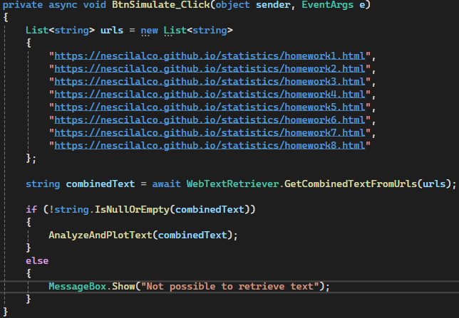
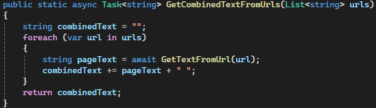
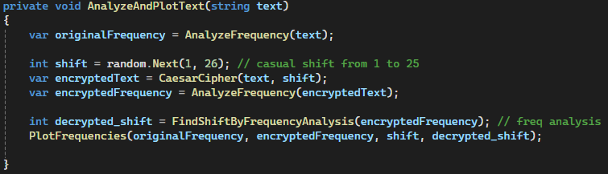
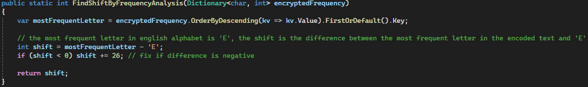

Simulation Exercise
Part 1
For the first part of the practical part I chose to use the web pages of my previous homeworks.
I started by listing the various URLs, then passed them to the GetCombinedTextFromUrls method.

This method cycles through the list of URLs passed as a input parameter and extracts all the text of the
corresponding web pages, concatenating the text.

If the resulting text is not empty, the AnalyzeAndPlotText method is called.

Here the AnalyzeFrequency method first analyses the
frequency of the various letters within the text.
Then, after extracting a random value between 1 and 25, it ciphers the text using Caesar's cipher.
We can see that the legend shows the shift used in Caesar's cipher, while next to the ‘Simulate’ button is the Retrieved Shift. This Retrieved Shift is the result of the
FindShiftByFrequencyAnalysis method,
which does a
frequency analysis. In fact, it attempts to guess the shift applied to the plaintext by analysing the most
frequent letter within the ciphertext. Once it has found the most frequent letter in the ciphertext, it
subtracts from this the number corresponding to the letter ‘E’, the most commonly used letter in the English
language, and in this way finds the shift applied.

Another method to find the shift would be to brute force the ciphertext by trying various shifts until the plaintext makes sense.
Part 2
The ‘Optional Simulation’ button triggers the BtnSimulate_optional_Click
method, which also extracts the
text from the web pages and calls the OptionalAnalysis method.

This method converts letters to corresponding numbers and encodes the text using the modular
exponentiation
with the formula \[
E = L^e \mod P
\], where:
- \( E \): Encoded value
- \( L \): Numeric representation of the letter
- \( e \): Exponent (public key parameter)
- \( P \): Modulus (prime number)
The
TryFindParameters method allows to determine the \( e \) and \( P \) values basing on encoded values, in case these are not known.

The
possibleEs list contains candidate values for \( e = 3 \) and \( e = 65537 \), which are common choices in
cryptography, the loops are done for P values in the range of 2 to 100 and for each combination of P and e,
the method tries to decode all values in encodedValues. We can see that retrieved values near the "Optional Simulation" button correspond to the values assigned in the ModularExponentiation method and showed in the legend.
The method then proceeds to calculate the distribution of encoded values and the Shannon entropy, that measures the uncertainty (or randomness) of the distribution, and to plot the results.